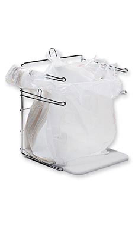

|  |
|---|
| A rack of plastic bags, similar in appearance to the RSE-039 instances. |
RSE-039 is a series of 500 plastic bags manufactured by an unknown company that was somehow released into circulation of various retail and grocery stores through Cook County, Illinois. Each instance is given its own designation, following the format RSE-039-XXX. Each bag has the anomalous property that all non-human objects fall through it. This includes but is not limited to, food, animals, and plants. Tests have been conducted using RSE-039-27 that concluded the instances can differentiate between animal bones and human bones. Upon an instance being detected, the local RSE foundation staff will appear on site to contain the anomaly. Each one of the instances has it's number written on the bottom, making it easy to tell them apart from normal plastic bags. This is how the conclusion was reached that there are 500 of them, as 500 is the highest instance number found, although it is possible there are more. Currently 278 of the 500 instances have been documented and contained, with most missing RSE-039 occurrences having numbers in the 300s. Besides being fundamentally useless as a bag, RSE-039 is harmless, and very easy to contain.
RSE-039 instances are kept on hangers with numbers organized in chronological order by their instance number, inside a closet in a hallway in Location 01.